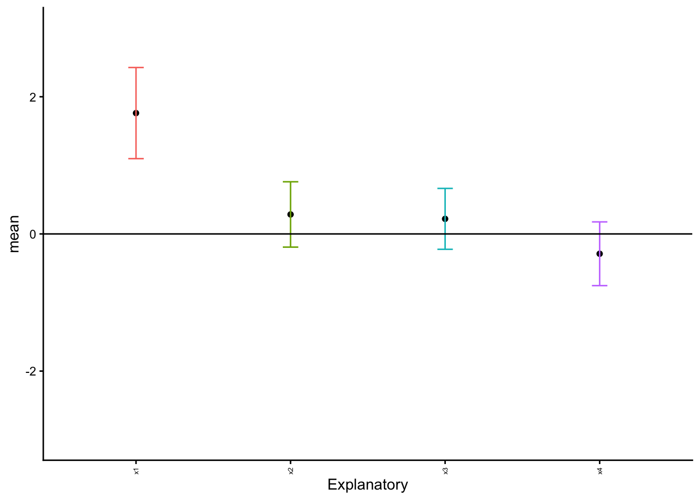
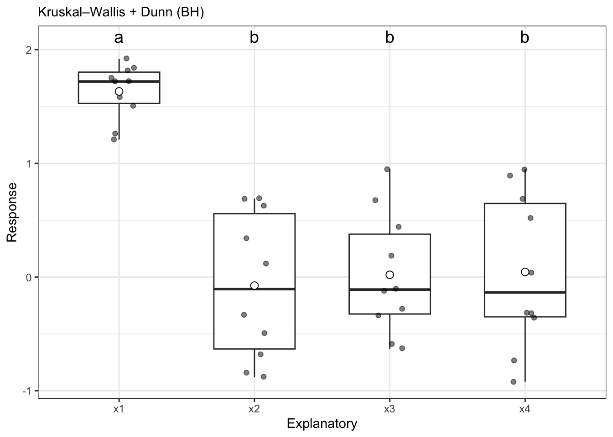

# plyr needed for examples on this page
library(plyr)
# load tidyverse
library(tidyverse)
# need for stats
# see glossary for install instructions
library(UNKstats)12 ANOVA: Part 1
12.1 Introduction
When we are comparing multiple (2+) populations, we perform what is called an analysis of variance - or an ANOVA. We opt for this different method because we are trying to minimize error. As you’ll recall, we use \(\alpha\) to minimize our chances of making an error and coming to an incorrect conclusion regarding our data. In our previous tests (\(t\)-tests) we are comparing the means between two different populations, such that \(H_0: \mu_1 = \mu_2\). When comparing multiple populations, comparing the means in this direct fashion can increase the probability of introducing error into a system. Consider the following:
# This creates a reproducible example
# rnorm creates random datasets
set.seed(8675309)
for(i in 1:100){
x <- rnorm(10)
if(i == 1){
data <- x |> as.data.frame()
colnames(data) <- "Response"
data$Explanatory <- paste0("x",i)
}else{
newdat <- x |> as.data.frame()
colnames(newdat) <- "Response"
newdat$Explanatory <- paste0("x",i)
data <- rbind(data,newdat)
}
}
# summarize by group
summary_data <- ddply(data, "Explanatory", summarise,
N = length(Response),
mean = mean(Response),
sd = sd(Response),
se = sd / sqrt(N))
ggplot(summary_data, aes(x = Explanatory, y = mean, group = Explanatory)) +
geom_point() +
geom_errorbar(data = summary_data, aes(ymin = mean - 2*se, ymax = mean+2*se,
color = Explanatory), width = 0.1) +
geom_hline(yintercept = 0, col = "black", linewidth = 0.5) +
ylim(c(-1.5,1.5)) +
theme_classic() +
theme(legend.position = "none",
axis.text.x = element_text(angle = 90, vjust = 0.5, size = 5))
As we can see above, with just ten random samples and 100 sampling events, we get some datasets that do not have the mean included within the interquartile range, and thus have means that would be statistically different than what we draw. As we increase the number of draws, we get closer to the mean:
set.seed(8675309)
for(i in 1:100){
x <- rnorm(100)
if(i == 1){
data <- x |> as.data.frame()
colnames(data) <- "Response"
data$Explanatory <- paste0("x",i)
}else{
newdat <- x |> as.data.frame()
colnames(newdat) <- "Response"
newdat$Explanatory <- paste0("x",i)
data <- rbind(data,newdat)
}
}
# summarize by group
summary_data <- ddply(data, "Explanatory", summarise,
N = length(Response),
mean = mean(Response),
sd = sd(Response),
se = sd / sqrt(N))
ggplot(summary_data, aes(x = Explanatory, y = mean, group = Explanatory)) +
geom_point() +
geom_errorbar(data = summary_data, aes(ymin = mean - 2*se, ymax = mean+2*se,
color = Explanatory), width = 0.1) +
geom_hline(yintercept = 0, col = "black", linewidth = 0.5) +
ylim(c(-1.5,1.5)) +
theme_classic() +
theme(legend.position = "none",
axis.text.x = element_text(angle = 90, vjust = 0.5, size = 5))
As we can see, even with 100 sample, we still have some chances of having groups that are different! When we do pairwise comparisons, we are compounding the error and the possibility of coming to an incorrect conclusion. Thus, when comparing multiple groups, we use the variances to see if groups come from the same distribution rather than the mean.
12.1.1 A faster way to check normality
Checking the normality can be a pain. Thankfully, there is an easier way we can check. Take, for example, the penguins dataset built into R.
head(penguins) species island bill_len bill_dep flipper_len body_mass sex year
1 Adelie Torgersen 39.1 18.7 181 3750 male 2007
2 Adelie Torgersen 39.5 17.4 186 3800 female 2007
3 Adelie Torgersen 40.3 18.0 195 3250 female 2007
4 Adelie Torgersen NA NA NA NA <NA> 2007
5 Adelie Torgersen 36.7 19.3 193 3450 female 2007
6 Adelie Torgersen 39.3 20.6 190 3650 male 2007Let’s say we want to check if the bill length is normally distributed between all species.
First, we have to remove NA values for this example only to make sure things work right.
# FOR THIS EXAMPLE ONLY
# remove NA values
penguins2 <- penguins |>
na.omit()Next, we can test for normality by species in bill length.
penguins2 |>
group_by(species) |>
dplyr::summarize(p.value = shapiro.test(bill_len)$p.value)# A tibble: 3 × 2
species p.value
<fct> <dbl>
1 Adelie 0.685
2 Chinstrap 0.194
3 Gentoo 0.0199As we can see above, two species are normally distributed, but Gentoo Penguin is not.
NOTE that I ran dplyr::summarize and not summarize - there is an error in the libraries used in this class where summarize is sometimes overwritten, so specifying the dplyr library (part of tidyverse) ensures that we always get the right function.
We can test a transformation like so:
penguins2 |>
group_by(species) |>
dplyr::summarize(p.value = shapiro.test(log1p(bill_len))$p.value)# A tibble: 3 × 2
species p.value
<fct> <dbl>
1 Adelie 0.863
2 Chinstrap 0.121
3 Gentoo 0.202As we can see, a log1p transformation is sufficient.
12.2 ANOVA: By hand
We are predominately going to be using the default function aov to perform ANOVAs in this course. However, you can expand the following workthrough if you would like to see step-by-step instructions on calculating a one-way ANOVA by hand.
Click here to see the manual method.
For this workthrough, we will use the following psuedorandom dataset:
set.seed(8675309)
for(i in 1:4){
x <- rnorm(10)
if(i == 1){
x <- rnorm(10, mean = 2)
data <- x |> as.data.frame()
colnames(data) <- "Response"
data$Explanatory <- paste0("x",i)
}else{
newdat <- x |> as.data.frame()
colnames(newdat) <- "Response"
newdat$Explanatory <- paste0("x",i)
data <- rbind(data,newdat)
}
}
# split into "typical" table
expanded_data <- NULL
expanded_data$x1 <- data$Response[which(data$Explanatory=="x1")]
expanded_data$x2 <- data$Response[which(data$Explanatory=="x2")]
expanded_data$x3 <- data$Response[which(data$Explanatory=="x3")]
expanded_data$x4 <- data$Response[which(data$Explanatory=="x4")]
expanded_data <- expanded_data |>
as.data.frame()
# summarize by group
summary_data <- ddply(data, "Explanatory", summarise,
N = length(Response),
mean = mean(Response),
sd = sd(Response),
se = sd / sqrt(N))
ggplot(summary_data, aes(x = Explanatory, y = mean, group = Explanatory)) +
geom_point() +
geom_errorbar(data = summary_data, aes(ymin = mean - 2*se, ymax = mean+2*se,
color = Explanatory), width = 0.1) +
geom_hline(yintercept = 0, col = "black", linewidth = 0.5) +
ylim(c(-3,3)) +
theme_classic() +
theme(legend.position = "none",
axis.text.x = element_text(angle = 90, vjust = 0.5, size = 5))
expanded_data |> round(2) x1 x2 x3 x4
1 0.45 1.99 0.38 -0.64
2 3.02 0.04 1.15 0.00
3 2.15 -0.40 1.57 0.05
4 1.34 -0.47 0.59 0.68
5 1.01 -0.41 -0.62 -0.25
6 3.97 0.68 -0.23 -0.15
7 1.56 0.69 0.06 -0.87
8 1.10 0.53 -0.31 -1.98
9 1.85 -0.19 -0.25 0.24
10 1.17 0.38 -0.15 0.04Above, we can see the made-up dataset where it appears as though one population differs from the other populations in our measurements. Let’s calculate an ANOVA and find out if this is the case!
NOTE throughout this process that I am trying to name variables in a straightforward fashion so as not to lose my way.
12.2.1 Calculate group means and Grand Mean
Let us assume we have a dataset, \(x\), that is \(k\) columns and \(n\) rows, with \(N\) data points in the entire data frame. We first want to take the column means for each group \(k\), such that we have \(\bar{x}_k\). We also need to find the mean of the entire dataset, \(\bar{x}_n\). We can calculate this by taking \(\frac{\Sigma x}{n}\), which we have to calculate by column as follows.
# calculate the mean of each group
# each group is in a single column
group_means <- colMeans(expanded_data)
# rounding to two decimal places
group_means |> round(2) x1 x2 x3 x4
1.76 0.28 0.22 -0.29 Next, we need to calculate the number of total entries in the dataset. We have written a function to accomplish this incase some rows have different numbers of entries from others.
n <- 0
for(i in 1:ncol(expanded_data)){
# account for unequal row length, if exists
sample <- expanded_data[,i] |>
as.numeric() |>
na.omit()
n <- n + length(sample)
}
n[1] 40Next, we can calculate the grand_mean of all of the data.
# sum up all the data
dataset_sum <- colSums(expanded_data) |>
sum()
# divide by the number of data points
grand_mean <- dataset_sum/n
# display mean
grand_mean |> round(2)[1] 0.4912.2.2 Total sum of squares
To calculate the total sum of squares (TSS), we need to take the deviations (differences) of each point from the grand mean \(\bar{x}_n\), square them, and them take the sum of them.
# calculate deviates
# can calculate across all table at once
grand_deviates_squared <- (expanded_data - grand_mean)^2
# round output for here
grand_deviates_squared |> round(2) x1 x2 x3 x4
1 0.00 2.22 0.01 1.28
2 6.39 0.20 0.43 0.25
3 2.74 0.81 1.17 0.20
4 0.72 0.94 0.01 0.04
5 0.26 0.83 1.23 0.56
6 12.10 0.04 0.52 0.42
7 1.13 0.04 0.19 1.87
8 0.37 0.00 0.65 6.11
9 1.84 0.46 0.55 0.07
10 0.46 0.01 0.42 0.21# calculate the sum of all the deviates
ss_total <- rowSums(grand_deviates_squared) |>
sum()
ss_total |> round(2)[1] 47.7312.2.3 Within-group sum of squares
For each data point, we need to calculate its deviation from its own group mean, squaring these deviations and then summing them together. We can’t calcualte this quite as elegantly as the aforementioned data, but we can write a function that will operate across the table and create a new dataset on our behalf.
# replicate dataset
# replace columns with deviate data
group_deviates <- expanded_data
# loop through each column
for(i in 1:ncol(group_deviates)){
# get the data in each group
dat <- group_deviates[,i]
# calculate the group mean
mu <- mean(dat)
# calculate the group deviates
dev.dat <- (dat - mu)^2
# save into table
group_deviates[,i] <- dev.dat
}
group_deviates |> round(2) x1 x2 x3 x4
1 1.72 2.90 0.02 0.12
2 1.59 0.06 0.87 0.08
3 0.15 0.47 1.84 0.11
4 0.18 0.57 0.14 0.95
5 0.57 0.49 0.70 0.00
6 4.89 0.16 0.20 0.02
7 0.04 0.16 0.02 0.34
8 0.44 0.06 0.28 2.85
9 0.01 0.22 0.22 0.28
10 0.35 0.01 0.14 0.11# calculate sum of data table
ss_within <- colSums(group_deviates) |>
sum()
ss_within |> round(2)[1] 24.3312.2.4 Among-group sum of squares
The total sum of squares is equal to the among groups sum of squares and the within groups sum of squares added together; thus, we can solve this part with some easy arithmetic.
ss_among <- ss_total - ss_within
ss_among |> round(2)[1] 23.412.2.5 Calculate degrees of freedom
Our degrees of freedom for the “between” group is the number of categories minus one (\(K-1\)).
ss_among_df <- ncol(expanded_data) - 1
ss_among_df[1] 3Our degrees of freedom for the within group are the number of total samples minus the number of categories (\(N - K\)).
ss_within_df <- n - ncol(expanded_data)
ss_within_df[1] 36Our degrees of freedom for the total sum of squares is the number of samples minus one (\(N-1\)).
ss_total_df <- n - 1
ss_total_df[1] 3912.2.6 Calculate mean squares
For each category (among and within), the mean square is equal to the sum of squares divided by the degrees of freedom.
ms_among <- ss_among/ss_among_df
ms_among |> round(2)[1] 7.8ms_within <- ss_within/ss_within_df
ms_within |> round(2)[1] 0.6812.2.7 Get \(F\) statistic
We divide the sum of squares among data point by the sum of squares within data points to obtain our \(F\) statistic.
f_stat <- ms_among/ms_within
f_stat |> round(2)[1] 11.5412.2.8 Get \(p\) value
We can use the function pf to calculate the \(p\) value for any given \(F\). Note that this function requires two different degrees of freedom to work correctly, and we are always looking right since this is a unidirectional distribution.
pf(f_stat,
df1 = ss_among_df,
df2 = ss_within_df,
lower.tail = F)[1] 1.894073e-05Given how small our \(p\) value is, we want to round this to \(p<0.0001\). As we can see, it is very unlikely that these are the same population.
12.3 ANOVA: By R
For this, we need to use the dataframe where we have all data in a single column and all ID’s in the other columns. We then show how we want the ANOVA to operate across the data using the ~ symbol.
data_aov <- run_oneway(data = data,
dv = "Response",
group = "Explanatory",
parametric = TRUE)
data_aov$test_info
$test_info$test
[1] "oneway_anova_tukey"
$test_info$parametric
[1] TRUE
$model
Call:
stats::aov(formula = fml, data = df)
Terms:
Explanatory Residuals
Sum of Squares 23.40293 24.32949
Deg. of Freedom 3 36
Residual standard error: 0.8220822
Estimated effects may be unbalanced
$anova_table
# A tibble: 2 × 6
term df sumsq meansq statistic p.value
<chr> <int> <dbl> <dbl> <dbl> <dbl>
1 Explanatory 3 23.4 7.80 11.5 0.0000189
2 Residuals 36 24.3 0.676 NA NA
$posthoc
# A tibble: 6 × 7
contrast diff lwr upr p.adj group2 group1
<chr> <dbl> <dbl> <dbl> <dbl> <chr> <chr>
1 x2-x1 -1.48 -2.47 -0.488 0.00156 x2 x1
2 x3-x1 -1.54 -2.53 -0.552 0.000939 x3 x1
3 x4-x1 -2.05 -3.04 -1.06 0.0000147 x4 x1
4 x3-x2 -0.0644 -1.05 0.926 0.998 x3 x2
5 x4-x2 -0.573 -1.56 0.417 0.414 x4 x2
6 x4-x3 -0.509 -1.50 0.481 0.517 x4 x3
$letters
# A tibble: 4 × 2
Explanatory .group
<chr> <chr>
1 x1 a
2 x2 b
3 x3 b
4 x4 b
$plot
attr(,"class")
[1] "teach_anova_result" "list"
attr(,"meta")
attr(,"meta")$design
[1] "oneway_between"
attr(,"meta")$dv
[1] "Response"
attr(,"meta")$factors
attr(,"meta")$factors$between
[1] "Explanatory"
attr(,"meta")$adjust
[1] "tukey"
attr(,"meta")$parametric
[1] TRUEThese numbers match the by hand methodology from the previous section, showing that the math is the same.
12.4 Post-hoc Tukey test
ANOVA tells us if a test is different, but it doesn’t tell us which test is different. To do this, we have to perform a Tukey test.
12.4.1 Tukey test by hand
To do this by hand, we will need a lot of data from our aforementioned ANOVA test.
Click here to see the by-hand method.
We need to calculate pairwise differences between each set of means.
x1_mean <- mean(data$Response[data$Explanatory == "x1"])
x2_mean <- mean(data$Response[data$Explanatory == "x2"])
x3_mean <- mean(data$Response[data$Explanatory == "x3"])
x4_mean <- mean(data$Response[data$Explanatory == "x4"])
group_means <- c(x1_mean, x2_mean, x3_mean, x4_mean)
# calculate all pairwise differences
pairwise_mean_diffs <- dist(group_means)
pairwise_mean_diffs |> round(2) 1 2 3
2 1.48
3 1.54 0.06
4 2.05 0.57 0.51Next, we need a critical \(Q\) value against which we can compare. For Tukey, our degrees of freedom are the same as the degrees of freedom for \(SS_{within}\): \(N - K\).
# set p value
tukey_q <- qtukey(p = 0.95,
# get length of categories / columns
nmeans = ncol(expanded_data),
df = ss_within_df)
tukey_q |> round(2)[1] 3.81We need to multiply \(Q\) by the pooled variance.This is the same as the average of the variances for each group.
var_data <- 0
# calculate pooled variance
for(i in 1:ncol(expanded_data)){
var_data <- var_data + var(expanded_data[,i])
}
pooled_var_dat <- sqrt(var_data/n)
pooled_var_dat |> round(2)[1] 0.26We can calculate the Tukey critical value by multiplying the pooled variance by \(Q\).
tukey_critical <- tukey_q*pooled_var_dat
tukey_critical |> round(2)[1] 0.99Remember, we are comparing to the actual value, not the rounded value.
Which mean differences are difference compared to our critical value?
pairwise_mean_diffs[pairwise_mean_diffs < tukey_critical] <- 0
pairwise_mean_diffs 1 2 3
2 1.477866
3 1.542282 0.000000
4 2.051068 0.000000 0.000000As we can see above, three differences cross our threshold - all associated with x1.
When we graph things, we want to label this group as different. We will cover this a little later in the tutorial.
12.4.2 Tukey test in R
Tukey is included in the run_oneway function; if you want to do it separately, you can do the following.
data_aov$posthoc# A tibble: 6 × 7
contrast diff lwr upr p.adj group2 group1
<chr> <dbl> <dbl> <dbl> <dbl> <chr> <chr>
1 x2-x1 -1.48 -2.47 -0.488 0.00156 x2 x1
2 x3-x1 -1.54 -2.53 -0.552 0.000939 x3 x1
3 x4-x1 -2.05 -3.04 -1.06 0.0000147 x4 x1
4 x3-x2 -0.0644 -1.05 0.926 0.998 x3 x2
5 x4-x2 -0.573 -1.56 0.417 0.414 x4 x2
6 x4-x3 -0.509 -1.50 0.481 0.517 x4 x3 12.5 Plotting
data_aov$plot
12.6 Kruskal-Wallis tests
The Kruskal-Wallis test is the non-parametric version of an ANOVA. To demonstrate this, we will be creating a non-normal distribution by pulling random values from a uniform distribution, using the random uniform function runif. Note we are rounding the data here to make it more similar to non-normal datasets you may encounter, and to increase the probability of ties.
## COPY THIS WHOLE CHUNK ##
# will load example data
set.seed(8675309)
for(i in 1:4){
x <- runif(10, min = -1, max = 1) |>
round(2)
if(i == 1){
x <- runif(10, min = 1, max = 2) |>
round(2)
data <- x |> as.data.frame()
colnames(data) <- "Response"
data$Explanatory <- paste0("x",i)
}else{
newdat <- x |> as.data.frame()
colnames(newdat) <- "Response"
newdat$Explanatory <- paste0("x",i)
data <- rbind(data,newdat)
}
}
# split into "typical" table
expanded_data <- NULL
expanded_data$x1 <- data$Response[which(data$Explanatory=="x1")]
expanded_data$x2 <- data$Response[which(data$Explanatory=="x2")]
expanded_data$x3 <- data$Response[which(data$Explanatory=="x3")]
expanded_data$x4 <- data$Response[which(data$Explanatory=="x4")]
expanded_data <- expanded_data |>
as.data.frame()
# summarize by group
summary_data <- ddply(data, "Explanatory", summarise,
N = length(Response),
mean = mean(Response),
sd = sd(Response),
se = sd / sqrt(N))
ggplot(summary_data, aes(x = Explanatory, y = mean, group = Explanatory)) +
geom_point() +
geom_errorbar(data = summary_data, aes(ymin = mean - 2*se, ymax = mean+2*se,
color = Explanatory), width = 0.1) +
geom_hline(yintercept = 0, col = "black", linewidth = 0.5) +
ylim(c(-3,3)) +
theme_classic() +
theme(legend.position = "none",
axis.text.x = element_text(angle = 90, vjust = 0.5, size = 5))
12.6.1 Confirming normality
We can confirm these data are non-normal with Shapiro-Wilk tests and histograms.
data |>
group_by(Explanatory) |>
dplyr::summarise(p.value = shapiro.test(Response)$p.value)# A tibble: 4 × 2
Explanatory p.value
<chr> <dbl>
1 x1 0.193
2 x2 0.120
3 x3 0.560
4 x4 0.348While these data came out normal, for the purposes of this example, we will proceed with a non-normal test.
12.6.2 Performing the test
kruskal_oneway <- run_oneway(data,
dv = "Response",
group = "Explanatory",
parametric = F)
kruskal_oneway$test_info
$test_info$test
[1] "kruskal_dunn"
$test_info$parametric
[1] FALSE
$model
NULL
$anova_table
# A tibble: 1 × 5
term statistic df p.value method
<chr> <dbl> <int> <dbl> <chr>
1 Explanatory 22.1 3 0.0000607 Kruskal–Wallis
$posthoc
# A tibble: 6 × 3
group1 group2 p.adj
<chr> <chr> <dbl>
1 x1 x2 0.000276
2 x1 x3 0.000428
3 x1 x4 0.000428
4 x2 x3 0.851
5 x2 x4 0.851
6 x3 x4 1
$letters
# A tibble: 4 × 2
Explanatory .group
<chr> <chr>
1 x1 a
2 x2 b
3 x3 b
4 x4 b
$plot
attr(,"class")
[1] "teach_anova_result" "list"
attr(,"meta")
attr(,"meta")$design
[1] "oneway_between"
attr(,"meta")$dv
[1] "Response"
attr(,"meta")$factors
attr(,"meta")$factors$between
[1] "Explanatory"
attr(,"meta")$adjust
[1] "BH"
attr(,"meta")$parametric
[1] FALSE12.6.3 By hand
Click here to see the Kruskal-Wallis by hand.
First, we need to order all the data in the entire dataset. This is easiest to do if we use the dataset with all data in a single column.
data$ranks <- rank(data$Response, ties.method = "average")
# view first couple of rows
head(data) Response Explanatory ranks
1 1.84 x1 39
2 1.58 x1 34
3 1.51 x1 33
4 1.26 x1 32
5 1.75 x1 37
6 1.92 x1 40Now, we need to calculate the sum of the ranks for each category. The below function will take the sum of the ranks for the rows which match the condition of having the group be x1.
x1_sum <- sum(data$ranks[which(data$Explanatory=="x1")])
x2_sum <- sum(data$ranks[which(data$Explanatory=="x2")])
x3_sum <- sum(data$ranks[which(data$Explanatory=="x3")])
x4_sum <- sum(data$ranks[which(data$Explanatory=="x4")])Now, we need to calculate our test statistic. The test statistic is \(H\), with: \[H = \frac{12}{N(N+1)} \cdot \Sigma \frac{R_j^2}{n_j}-3(N+1)\]In this equation, \(R\) is the sum of the ranks for a given category. This follows a \(\chi^2\) distribution with \(k-1\) degrees of freedom, with \(k\) referring to categories.
For these, we need to know what \(n\) is for each category.
n1 <- length(data$ranks[which(data$Explanatory=="x1")])
n2 <- length(data$ranks[which(data$Explanatory=="x2")])
n3 <- length(data$ranks[which(data$Explanatory=="x3")])
n4 <- length(data$ranks[which(data$Explanatory=="x4")])Next, we can calculate the sums of the \(\frac{R^2}{n}\) term.
r2_sum <- sum(x1_sum^2/n,
x2_sum^2,n,
x3_sum^2/n,
x4_sum^2/n)Now, we can calculate \(H\).
N <- sum(n1, n2, n3, n4)
H <- ((12/(N*(N+1)))*r2_sum)-(3*(N+1))
H |> round(2)[1] 57.43Now, we can evaluate this with a \(\chi^2\) \(p\) value.
pchisq(q = H,
df = ncol(data)-1,
# remember, looking right!
lower.tail = FALSE)[1] 3.382831e-13As we can see, the probability is extremely low with \(p < 0.0001\). One distribution is different, and we can proceed with Tukey tests.
12.7 Homework: One-way ANOVA
Complete the following problems. You must complete one problem by hand in addition to using the R method.
12.7.1 Question 1:
Researchers want to test a new drug when given at different dosages. They are also including a placebo. They are measuring the score on a psychological examination, and are hoping to find the most effective dose to reduce score. Run the proper tests to determine if each group is unique and what effects they have.
drug <- tibble(
Dose = rep(c("Placebo","Low","Med","High"), each = 12),
Score = c(
# Placebo
0.90,0.82,1.00,1.12,0.74,0.93,1.02,1.21,0.84,0.91,1.08,0.86,
# Low
0.10,0.00,-0.10,0.20,0.05,-0.05,0.15,0.00,-0.10,0.12,0.06,0.01,
# Med
-0.30,-0.42,-0.22,-0.50,-0.35,-0.27,-0.31,-0.46,-0.38,-0.20,-0.36,-0.29,
# High
0.40,0.32,0.50,0.36,0.25,0.46,0.41,0.52,0.35,0.30,0.44,0.39
)
)- State the null and alternative hypotheses.
- Are these data normal? How can you tell?
- Which dosage/dosages are most effective at reducing the score?
- What might the biological implications of this test be?
12.7.2 Question 2:
Professors at UNK are debating if labs should be kept in Biology 105. They want to see if exam scores are higher in classes taught with only lecture, only lab, or both. Run the proper tests to determine if each group is unique and what effects they have.
teach <- tibble(
Method = rep(c("Lab","Both","Lecture"), each = 15),
Exam = c(
# Lab
76,79,82,77,75,80,81,78,76,79,77,83,74,80,78,
# Both
84,85,82,88,83,86,84,87,81,86,85,83,84,89,82,
# Lecture
80,82,79,83,81,80,82,81,84,78,83,80,81,79,82
)
)- State the null and alternative hypotheses.
- Are these data normal?
- Which teaching method is most effective? How do you know this?
- What might the teaching implications of this test be?
12.7.3 Question 3:
Researchers are testing weight gain drugs in comparison to each other. They are also comparing the effects of these drugs to a placebo. Run the proper tests to determine if each group is unique and what effects they have.
diet <- tibble(
Diet = rep(c("A","B","C", "Placebo"), each = 14),
WeightGain = c(
# A
1.1,0.9,1.5,1.2,0.8,1.0,1.4,0.9,1.0,1.2,1.5,0.9,1.3,1.4,
# B
1.3,1.5,1.2,0.8,1.6,1.5,1.0,2.0,1.5,1.4,1.6,1.2,1.5,1.4,
# C
2.1,2.0,1.6,2.3,2.1,2.0,1.6,2.1,2.5,1.7,2.2,2.1,2.3,2.7,
# Placebo
0.2,0.2,-0.2,0.0,-0.8,-.4,0.4,0.2,1.0,0.0,-0.1,-0.2,-0.7,0.6
)
)- State the null and alternative hypotheses.
- Are these data normal?
- Interpret the meaning of the assigned letters. How were they found, and what do they mean?
- Which diet plan was most effective for gaining weight?
12.7.4 Question 4:
A field study is measuring time-to-first-foraging (minutes) for four bird colonies. Run the proper tests to determine if each group is unique.
set.seed(4517)
n_per <- 18
Colonies_data <- data.frame(
Colony = rep(c("North","East","South","West"), each = n_per),
Minutes = c(
round(rexp(n_per, rate = 1.0), 1),
round(rexp(n_per, rate = 1.3), 1),
round(rexp(n_per, rate = 0.7), 1),
round(rexp(n_per, rate = 1.0), 1)
)
)- State the null and alternative hypotheses.
- Are these data normal?
- Interpret the meaning of the assigned letters. How were they found, and what do they mean?
- Which colony/colonies were the fastest foragers?
12.7.5 Question 5:
A team of behavioral ecologists recorded the number of aggressive interactions among four populations of prairie voles raised in different social environments. They want to know if social upbringing influences aggression levels in male voles.
set.seed(9913)
n_per <- 16
vole <- tibble(
Environment = rep(c("Isolated","Paired","Group","Crowded"), each = n_per),
Aggression = c(
round(rnorm(n_per, mean = 8, sd = 3)),
round(rnorm(n_per, mean = 6, sd = 1.5)),
round(rnorm(n_per, mean = 4, sd = 2)),
round(rnorm(n_per, mean = 7, sd = 4))
)
)- State the null and alternative hypotheses.
- Are these data normal?
- Interpret the meaning of the assigned letters. How were they found, and what do they mean?
- What else is unique about this data and might explain the results? Hint: Look at the final plot